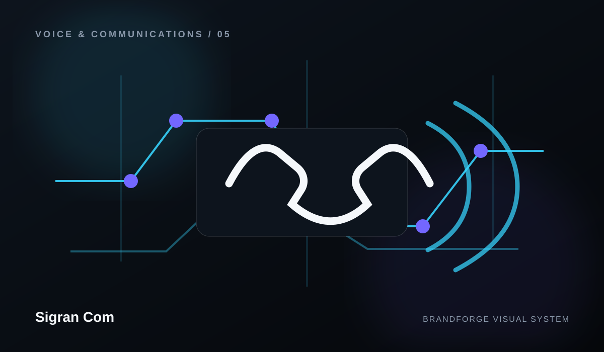
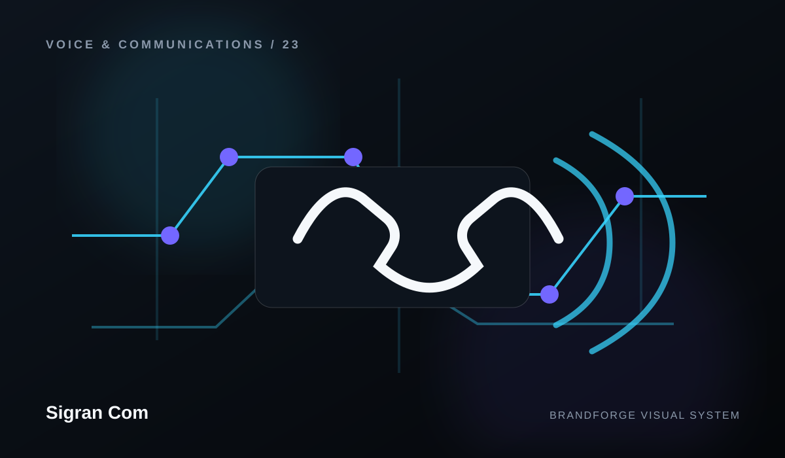
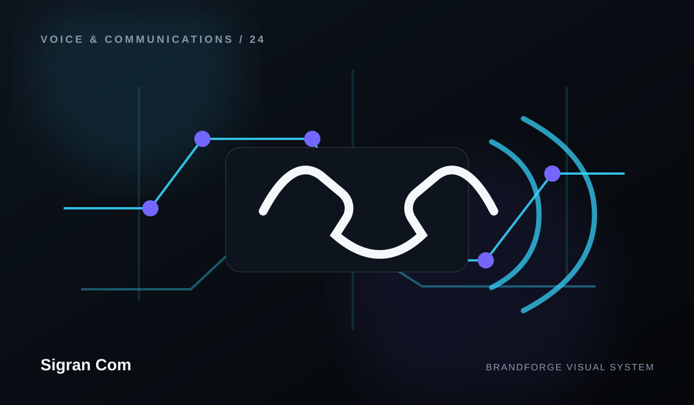
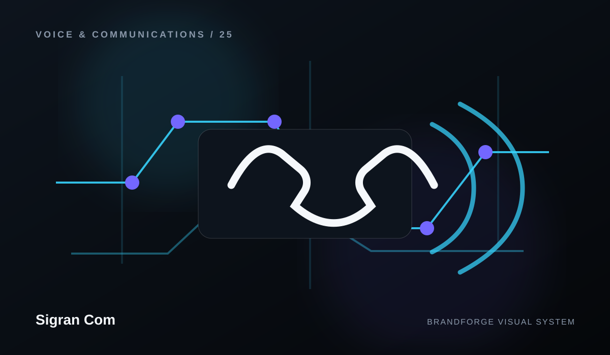
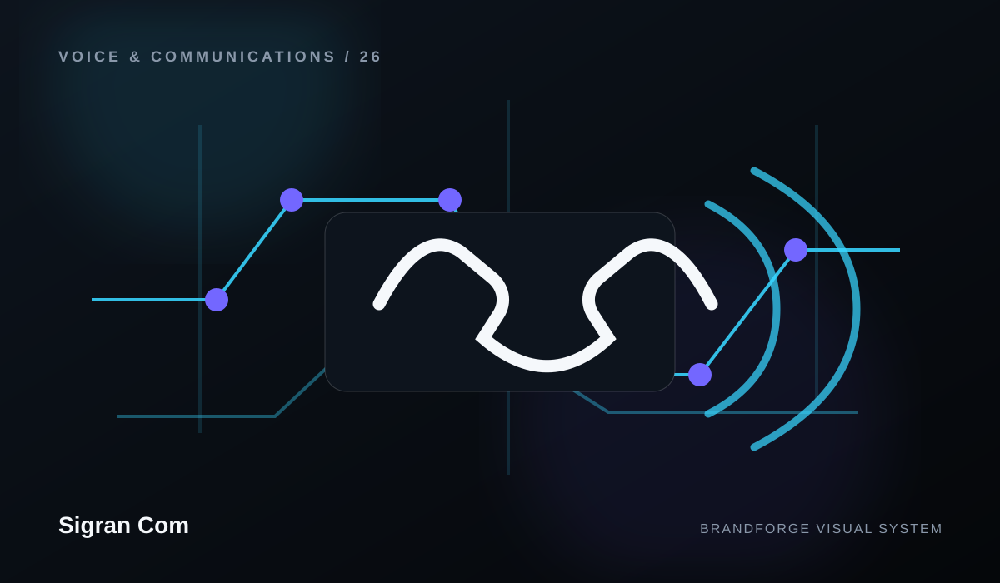
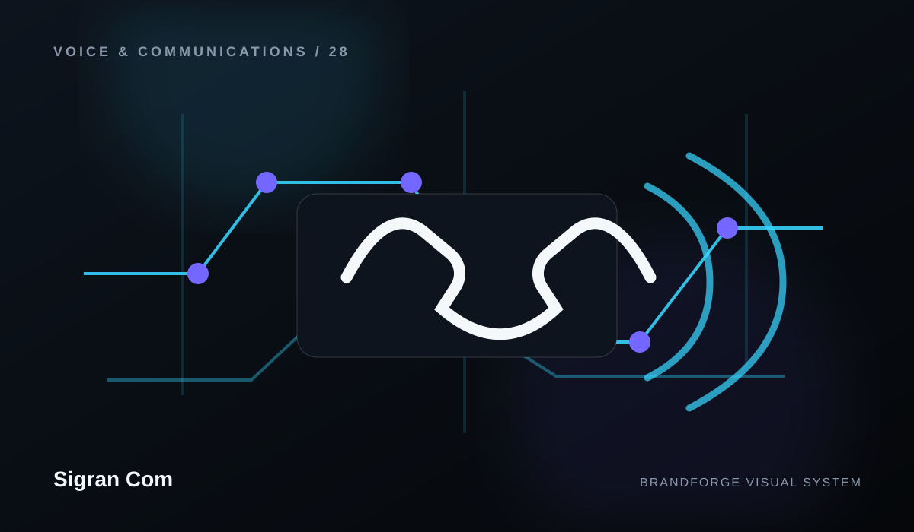

Sigran Com
Capabilities built to work together.
Sigran Com is organized as a connected system. Each area has its own role, but the experience becomes stronger when the pieces share one direction.


Voice Platform
Voice Platform is treated as part of the complete Sigran Com experience — designed to simplify the system while keeping the experience clear, useful, and maintainable.
Explore capability ↗Connectivity
Connectivity is treated as part of the complete Sigran Com experience — designed to shape the system while keeping the experience clear, useful, and maintainable.
Explore capability ↗
Numbers & Routing
Numbers & Routing is treated as part of the complete Sigran Com experience — designed to strengthen the system while keeping the experience clear, useful, and maintainable.
Explore capability ↗
Automation
Automation is treated as part of the complete Sigran Com experience — designed to shape the system while keeping the experience clear, useful, and maintainable.
Explore capability ↗
Messaging
Messaging is treated as part of the complete Sigran Com experience — designed to simplify the system while keeping the experience clear, useful, and maintainable.
Explore capability ↗
Contact Center
Contact Center is treated as part of the complete Sigran Com experience — designed to simplify the system while keeping the experience clear, useful, and maintainable.
Explore capability ↗Developer Experience
Developer Experience is treated as part of the complete Sigran Com experience — designed to connect the system while keeping the experience clear, useful, and maintainable.
Explore capability ↗
Trust & Operations
Trust & Operations is treated as part of the complete Sigran Com experience — designed to clarify the system while keeping the experience clear, useful, and maintainable.
Explore capability ↗CONNECTED BY DESIGN
One capability should strengthen the next.
Instead of presenting a disconnected list of services, the site explains how the different areas can reinforce one another. That creates a clearer story and a more professional path through the brand.